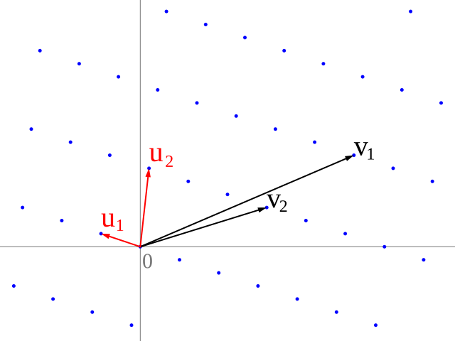

The algorithm
This package implements the greedy algorithm of Nguyen and Stehlé (ANTS-VI 2004, LNCS 3076, pp. 338–357) specialized to three dimensions. It is the algorithm of choice for low-dimensional lattice reduction because it has quadratic bit-complexity — comparable to Euclid's GCD — and is provably optimal in dimensions ≤ 4. (In 5 dimensions and up, the greedy algorithm can fail to find even the shortest lattice vector. This package does not target that regime.)
The implementation is three nested algorithmic layers.
Layer 1: 2D Gauss reduction

Image: Lattice-reduction.svg by Catslash (Wikimedia Commons, public domain).
For an informal introduction to this step, see the Wikipedia article on lattice reduction.
gauss_reduce(U, V) is the classical Gauss–Lagrange algorithm — an iterated-Euclidean-style reduction of a pair of lattice vectors. The loop body is:
V, U = U, V - round((U⋅V)/(U⋅U)) * Ui.e. subtract the nearest integer multiple of U from V, then swap. The pair terminates when ‖U‖ ≥ ‖V‖. The termination invariant is the 2D Minkowski condition: ‖U‖ ≤ ‖V‖ ≤ ‖V ± U‖.
One detail in the termination condition is load-bearing: the loop exits on norm(U) > norm(V) || norm(U) ≈ norm(V). The ≈ branch looks cosmetic but is essential. When ‖U‖ = ‖V‖ exactly — which happens inside the (U, V) pair that Gauss-reduction operates on whenever the parent 3D lattice is symmetric (cubic, FCC, BCC, hexagonal all produce equal-norm 2D pairs at some stage of the outer algorithm) — the strict > is false, the loop body runs, the vectors swap, and the next iteration is the same configuration with labels flipped. Without the ≈ clause the algorithm oscillates forever. With it, the algorithm accepts exact equality as a valid termination state. The two possible outputs at equal norms are both correct Gauss-reduced pairs; See Non-uniqueness.
Layer 2: shortening W against a 2D sublattice
shorten_w_in_uvw(U, V, W) is the core 3D step. Given three basis vectors, it:
- Gauss-reduces the
(U, V)pair. - Computes the projection coefficients
a, bthat placeW's projection inside the fundamental parallelogram of the(U, V)sublattice, and subtractsa·U + b·VfromW. - Checks all four corners of that parallelogram —
W,W-U,W-V,W-U-V— and replacesWwith whichever gives the shortest result.
The geometric justification for testing only four corners rests on a classical fact: for a Gauss-reduced 2D basis (U, V), the Voronoi cell of the 2D sublattice is a hexagon contained in the fundamental parallelogram, and its six neighbours are {±U, ±V, ±(U+V)} (or {±U, ±V, ±(U−V)} depending on whether ⟨U,V⟩ is positive or negative). Either way, the four parallelogram corners cover the nearest lattice point to any projection of W. The step therefore produces the unique shortest representative of the coset W + ℤU + ℤV.
The projection coefficients are computed as:
denom = (U⋅U)(V⋅V) − (U⋅V)² # squared area of the parallelogram
a = floor[ ((U⋅W)(V⋅V) − (V⋅W)(U⋅V)) / denom ]
b = floor[ ((V⋅W)(U⋅U) − (U⋅W)(U⋅V)) / denom ]denom is the squared Gram determinant of (U, V); it vanishes only when U and V are parallel, which is checked for and raises ErrorException.
Layer 3: the outer loop
mink_reduce wraps the above in a fixed-point loop:
while true
sort (U, V, W) by norm
(U, V, W) = shorten_w_in_uvw(U, V, W)
if norm(W) ≥ norm(V) ≥ norm(U): break
endThe termination argument: each non-trivial iteration strictly decreases ‖U‖² + ‖V‖² + ‖W‖², which is bounded below by λ₁² + λ₂² + λ₃², where λ₁, λ₂, λ₃ are the three successive minima of the lattice — the lengths of its shortest three linearly independent vectors. (See Context → What Minkowski reduction is for the full definition.) Since the vectors always lie in the lattice, the sum is discrete in the integer case and cannot decrease indefinitely; it converges in finitely many steps.
Nguyen and Stehlé show that for integer inputs of bit-size B the total number of iterations is O(B), giving quadratic bit complexity (the same order as Euclid's GCD). The empirical constant is ≈ 0.3 iterations/bit: devious_mat(26), a heavily-disguised simple-cubic basis with entries of ~46 bits, converges in exactly 15 outer iterations.
The error("Too many iterations") guard in mink_reduce sets the cap at 29 (iteration 30 raises the exception). That value is derived from two observations: the Nguyen-Stehlé bound gives ≈ 20 iterations for the Int64 worst case (63 bits × 0.3), and Float64 inputs can accumulate a handful of extra iterations from off-by-one floor rounding in shorten_w_in_uvw — see Precision. Across 50 000 randomized stress trials the worst observed count was 23; 29 gives ≈ 10 iterations of headroom without letting a genuine bug run silently for long.
Tracking the transform matrix
Every operation the algorithm performs on (U, V, W) is a column operation on the 3×3 matrix whose columns are those vectors. The operations are one of two elementary types:
- Permutation (outer sort step, Gauss swap): rearrange columns.
- Integer shear (Gauss update
V ← V − m·U, W-shiftW ← W − a·U − b·V, 4-corner step): add an integer multiple of one column to another.
Each of these is represented by an elementary integer matrix with |det| = 1, and the composition of all elementary matrices applied during a reduction is the transform matrix P satisfying R == M * P. P is accumulated as a Matrix{Int} throughout — so even when the vectors themselves are promoted to Float64 for numerical reasons (see Precision), P remains exact integer with |det(P)| = 1.
Why greedy?
Three-dimensional lattice reduction is a special case. In general dimension n, finding the shortest lattice vector (SVP) is NP-hard, so polynomial-time algorithms like LLL settle for an approximation. Dimensions 2, 3, and 4 are fortunate: the greedy algorithm terminates in quadratic time and achieves optimality (all three successive minima). Minkowski reduction coincides with what the greedy algorithm produces. See Context for how this relates to LLL, Niggli, and Selling reduction.
Reference
- Nguyen, P. Q. and Stehlé, D. Low-Dimensional Lattice Basis Reduction Revisited. Algorithmic Number Theory — ANTS-VI (2004), LNCS 3076, pp. 338–357. Springer. DOI · author preprint (PDF)
- Extended journal version: ACM Transactions on Algorithms 5(4) (2009), Article 46. DOI